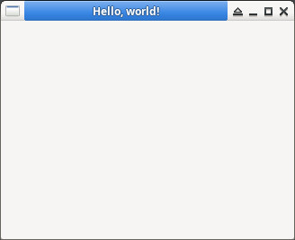

參考資訊：
https://github.com/gammasoft71/Examples_Gtkmm
https://docs.gtk.org/gtk3/getting_started.html
main.cpp
#include <gtkmm.h>
using namespace Glib;
using namespace Gtk;
class Form : public Window {
public:
Form() {
set_title("Hello, world!");
resize(320, 240);
show_all();
}
};
int main(int argc, char* argv[]) {
RefPtr<Application> app = Application::create(argc, argv);
Form form;
return app->run(form);
}
編譯、執行
$ g++ main.cpp -o main $(pkg-config --libs --cflags gtkmm-3.0) $ ./main
